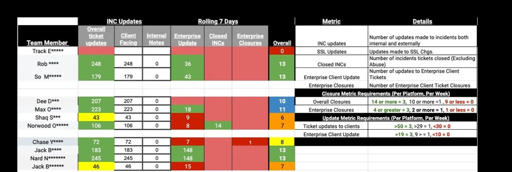
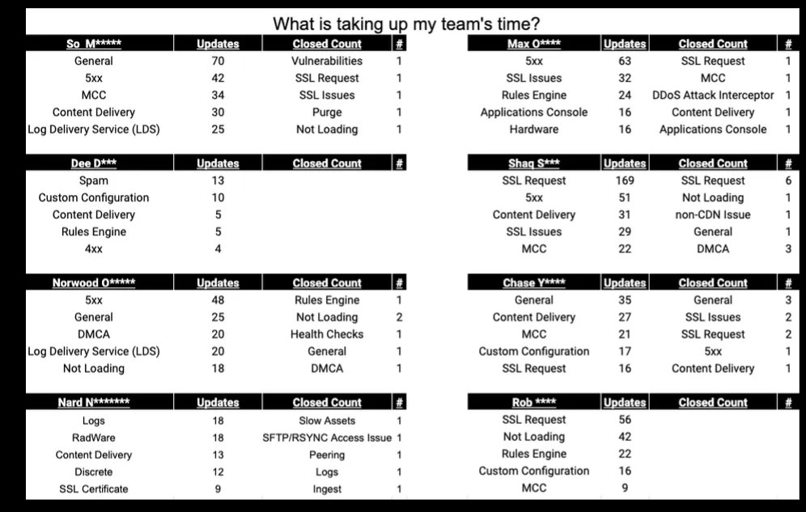
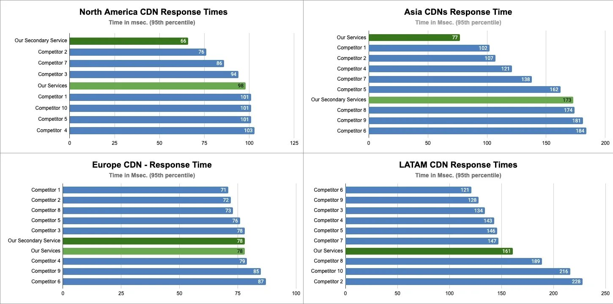
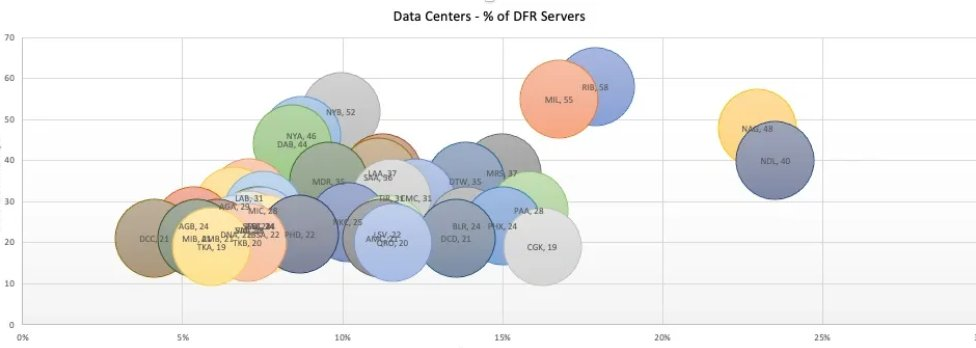
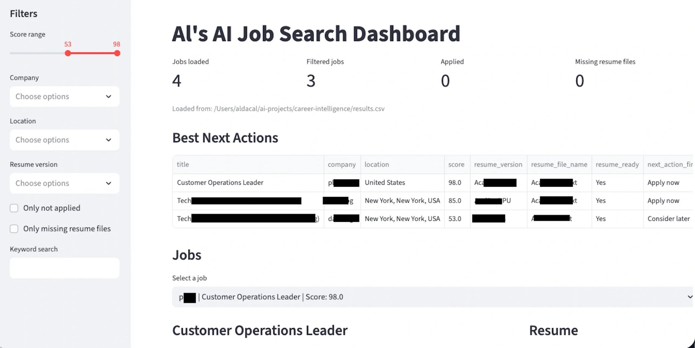
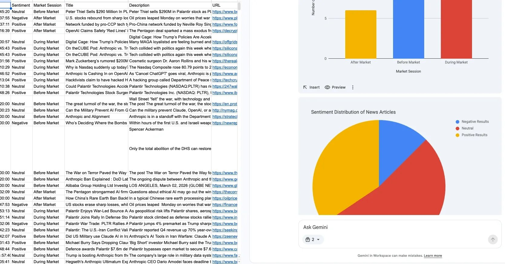

Support Operations Leader | Global Team Scaling | AI and Automation Strategy
I build support organizations that stop being a cost center and start driving real business impact.
Over 15 years, I’ve scaled 24/7 global teams through multiple acquisitions, built data frameworks that make performance visible, and closed the loop between customer signals and product decisions.
My operating model starts with data. I design KPI frameworks that teams actually understand, OKRs that connect support performance to real business outcomes, and executive dashboards that turn operational noise into decisions. I've scaled follow the sun operations across three continents and led teams through four acquisitions, each time maintaining performance while everything else was changing.
I partner closely with Product, Engineering, and Customer Success to close the loop between customer signals and platform improvements. ITIL fundamentals combined with AI driven automation is how I build support infrastructure that scales without breaking.
Tools I've designed and shipped, not side projects, but solutions that ran in production and moved the metrics.





